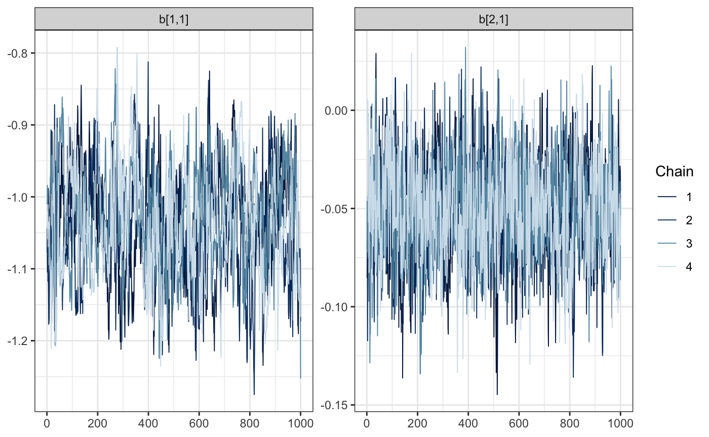

The 1988 Election Model
Shirin Glander, Tiphaine Martin, Matt Mulvahill, Michael Quinn, David Smith
Introduction
This model appears in chapter 14 of Gelman and Hill, which is a discussion state-level voting outcomes. Individual responses (y) are labelled as 1 for supporters of the Republican candidate and 0 for supporters of the Democrat (with undecideds excluded).
packageVersion("greta")## [1] '0.2.5'To access this data, we’ll directly source a script from the stan-dev GitHub repo. See the README file for more information on the contents of the script.
root <- "https://raw.githubusercontent.com/stan-dev/example-models/master"
model_data <- "ARM/Ch.14/election88_full.data.R"
source(file.path(root, model_data))
ls()## [1] "age" "age_edu" "black" "edu"
## [5] "female" "model_data" "N" "n_age"
## [9] "n_age_edu" "n_edu" "n_region_full" "n_state"
## [13] "region_full" "root" "state" "v_prev_full"
## [17] "y"Using this data, we will look to answer the following: what effect did race and gender have on voting outcomes in the 1988 election. While we cannot answer this question in causal terms without experimental data, we can at least answer this data in observational terms.
We’ll implement a multi-level model with varying intercepts. In lme4 syntax, that’s
glmer(y ~ black + female + (1 | state), family = binomial(link = "logit"))Where black identifies whether or not the respondent is black. 1 for ‘yes’ and 0 for ‘no’. female is a similar flag: 1 for ‘yes’ and 0 for ‘no’. State is numerically encoded values, equivalent to the data component of a factor variable.
The equivalent Stan model is
data {
int<lower=0> N;
int<lower=0> n_state;
vector<lower=0,upper=1>[N] black;
vector<lower=0,upper=1>[N] female;
int<lower=1,upper=n_state> state[N];
int<lower=0,upper=1> y[N];
}
parameters {
vector[n_state] a;
vector[2] b;
real<lower=0,upper=100> sigma_a;
real mu_a;
}
transformed parameters {
vector[N] y_hat;
for (i in 1:N)
y_hat[i] = b[1] * black[i] + b[2] * female[i] + a[state[i]];
}
model {
mu_a ~ normal(0, 1);
a ~ normal (mu_a, sigma_a);
b ~ normal (0, 100);
y ~ bernoulli_logit(y_hat);
}Exploring the data
To begin, we’ll plot values for each of the values that we’ll be working with.
The target (voting outcome):
data.frame(y) %>%
ggplot(aes(y)) +
geom_bar() +
ggtitle("Distribution of voting outcomes")Here’s the gender indicator.
data.frame(female) %>%
ggplot(aes(female)) +
geom_bar() +
ggtitle("Distribution of female indicator")Here’s the race indicator.
data.frame(black) %>%
ggplot(aes(black)) +
geom_bar() +
ggtitle("Distribution of black indicator")
Here’s the state variable. We have 51 state codes in the data, which includes Washington, DC.
data.frame(state) %>%
ggplot(aes(state)) +
geom_bar() +
ggtitle("Distribution of values within state")On the other, there are no observations for states 2 or 12. We’ll drop them from the model.
state_recoded <- dplyr::dense_rank(state)
table(state_recoded)## state_recoded
## 1 2 3 4 5 6 7 8 9 10 11 12 13 14 15
## 159 168 101 1280 145 134 37 13 641 264 34 479 261 113 127
## 16 17 18 19 20 21 22 23 24 25 26 27 28 29 30
## 183 169 49 246 325 447 240 189 263 35 102 24 24 363 96
## 31 32 33 34 35 36 37 38 39 40 41 42 43 44 45
## 777 292 54 521 115 124 517 75 183 56 290 698 69 12 302
## 46 47 48 49
## 323 109 323 15Building the model
Switching into greta, we’ll start by defining the data objects to use in our model.
n <- length(y)
n_states <- max(state_recoded)
y_greta <- as_data(y)
black_greta <- as_data(black)
female_greta <- as_data(female)
state_greta <- as_data(state_recoded)Now, we’ll set up the model components. First, the random effects. To match the Stan code above, we’ll store all of these in an a vector. We specify the number of effects using the dim parameter below.
mu_a <- normal(0, 1)
sigma_a <- variable(lower = 0.0, upper = 100.0)
a <- normal(mu_a, sigma_a, dim = n_states)We can use a similar approach to get the fixed effects in a single vector. We’ll have two effects.
b <- normal(0, 100, dim = 2)We will define the distribution of the outcome variable, y, as a transformation of a linear combination of the inputs above.
y_hat <- b[1] * black_greta + b[2] * female_greta + a[state_recoded]
p <- ilogit(y_hat)
distribution(y_greta) <- binomial(n, p)And finally, we assemble the components that we wish to sample in a model.
e88_model <- model(b, a, precision = "double")Let’s check out our graph.
plot(e88_model)Inference
Model in hand, we can begin sampling. Since we are sampling across multiple chains, we’ll use the “multisession” future strategy to do everything in parallel.
draws <- mcmc(e88_model, warmup = 1000, n_samples = 1000, chains = 4)Time to diagnose. Did the sample chains for our fixed effects mix reasonably? For all of the following visualizations, we’ll rely on the bayesplot package.
bayesplot::mcmc_trace(draws, regex_pars = "b\\[[.[12]")
And what about the random effects? We’ll investigate the first 5. Remember, we’ve recoded the previous state vector to remove the levels 2 and 12, which didn’t have any observations.
bayesplot::mcmc_trace(draws, regex_pars = "a\\[[1-5]\\,")Understanding our coefficients in their current form is a little hard, since they are on the logit scale. It would be nicer to work with probabilities. We can use calculate for this step.
To get every transformed version of our model parameters, we pass the draws object as the second argument. To get the name in an expected manner, we will assign the transformation to a local variable first.
And now a plot.
mcmc_areas(as_probs)
And the summarized results.
summary(as_probs)##
## Iterations = 1:1000
## Thinning interval = 1
## Number of chains = 4
## Sample size per chain = 1000
##
## 1. Empirical mean and standard deviation for each variable,
## plus standard error of the mean:
##
## Mean SD Naive SE Time-series SE
## prob[1,1] 0.2597 0.014373 2.273e-04 0.000771
## prob[2,1] 0.4874 0.006234 9.857e-05 0.000241
##
## 2. Quantiles for each variable:
##
## 2.5% 25% 50% 75% 97.5%
## prob[1,1] 0.2320 0.2499 0.2593 0.2694 0.2880
## prob[2,1] 0.4755 0.4831 0.4875 0.4917 0.4991Wrapping up
We can finally go back to the question posed at this beginning of this example. During the 1988 election a black voter, from a randomly selected state, had a .25 to .27 probability of voting for Reagan, while women had .48 to .49 probability of voting for the Republican candidate.
Session information
## R version 3.5.1 (2018-07-02)
## Platform: x86_64-apple-darwin15.6.0 (64-bit)
## Running under: macOS Sierra 10.12.6
##
## Matrix products: default
## BLAS: /Library/Frameworks/R.framework/Versions/3.5/Resources/lib/libRblas.0.dylib
## LAPACK: /Library/Frameworks/R.framework/Versions/3.5/Resources/lib/libRlapack.dylib
##
## locale:
## [1] en_GB.UTF-8/en_GB.UTF-8/en_GB.UTF-8/C/en_GB.UTF-8/en_GB.UTF-8
##
## attached base packages:
## [1] stats graphics grDevices utils datasets methods base
##
## other attached packages:
## [1] bindrcpp_0.2.2 greta_0.2.5 future_1.9.0 bayesplot_1.6.0
## [5] forcats_0.3.0 stringr_1.3.1 dplyr_0.7.6 purrr_0.2.5
## [9] readr_1.1.1 tidyr_0.8.1 tibble_1.4.2 ggplot2_3.0.0
## [13] tidyverse_1.2.1
##
## loaded via a namespace (and not attached):
## [1] nlme_3.1-137 fs_1.2.5 lubridate_1.7.4
## [4] RColorBrewer_1.1-2 progress_1.2.0 httr_1.3.1
## [7] rprojroot_1.3-2 tools_3.5.1 backports_1.1.2
## [10] R6_2.2.2 lazyeval_0.2.1 colorspace_1.3-2
## [13] withr_2.1.2 tidyselect_0.2.4 gridExtra_2.3
## [16] prettyunits_1.0.2 compiler_3.5.1 cli_1.0.0
## [19] rvest_0.3.2 xml2_1.2.0 influenceR_0.1.0
## [22] desc_1.2.0 labeling_0.3 scales_1.0.0
## [25] ggridges_0.5.1 tfruns_1.4 pkgdown_1.1.0.9000
## [28] commonmark_1.5 digest_0.6.17 rmarkdown_1.10.13
## [31] base64enc_0.1-3 pkgconfig_2.0.1 htmltools_0.3.6
## [34] htmlwidgets_1.2 rlang_0.2.2 readxl_1.1.0
## [37] htmldeps_0.1.1 rstudioapi_0.8 visNetwork_2.0.4
## [40] bindr_0.1.1 jsonlite_1.5 tensorflow_1.9
## [43] rgexf_0.15.3 magrittr_1.5 Matrix_1.2-14
## [46] Rcpp_0.12.18 munsell_0.5.0 reticulate_1.10
## [49] viridis_0.5.1 stringi_1.2.4 whisker_0.3-2
## [52] yaml_2.2.0 MASS_7.3-50 plyr_1.8.4
## [55] grid_3.5.1 parallel_3.5.1 listenv_0.7.0
## [58] crayon_1.3.4 lattice_0.20-35 haven_1.1.2
## [61] hms_0.4.2 knitr_1.20 pillar_1.3.0
## [64] igraph_1.2.2 reshape2_1.4.3 codetools_0.2-15
## [67] XML_3.98-1.16 glue_1.3.0 evaluate_0.11
## [70] downloader_0.4 modelr_0.1.2 cellranger_1.1.0
## [73] gtable_0.2.0 assertthat_0.2.0 broom_0.5.0
## [76] coda_0.19-1 roxygen2_6.1.0 viridisLite_0.3.0
## [79] memoise_1.1.0 Rook_1.1-1 DiagrammeR_1.0.0
## [82] globals_0.12.2 brew_1.0-6